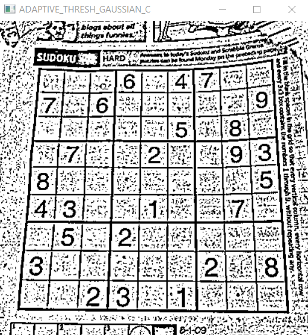

Adaptive Thresholding
One of the downsides of using simple thresholding methods is that we need to manually supply our threshold value, T. Furthermore, finding a good value of T may require many manual experiments and parameter tunings, which is simply not practical in most situations.To aid us in automatically determining the value of T, we leveraged Otsu’s method. And while Otsu’s method can save us a lot of time playing the “guess and checking” game, we are left with only a single value of T to threshold the entire image.
For simple images with controlled lighting conditions, this usually isn’t a problem. But for situations when the lighting is non-uniform across the image, having only a single value of T can seriously hurt our thresholding performance.Simply put, having just one value of T may not suffice.
To overcome this problem, we can use adaptive thresholding, which considers small neighbors of pixels and then finds an optimal threshold value T for each neighbor. This method allows us to handle cases where there may be dramatic ranges of pixel intensities and the optimal value of T may change for different parts of the image.
In adaptive thresholding, sometimes called local thresholding, our goal is to statistically examine the pixel intensity values in the neighborhood of a given pixel, p.The general assumption that underlies all adaptive and local thresholding methods is that smaller regions of an image are more likely to have approximately uniform illumination. This implies that local regions of an image will have similar lighting, as opposed to the image as a whole, which may have dramatically different lighting for each region.
However, choosing the size of the pixel neighborhood for local thresholding is absolutely crucial.The neighborhood must be large enough to cover sufficient background and foreground pixels, otherwise the value of T will be more or less irrelevant.
But if we make our neighborhood value too large, then we completely violate the assumption that local regions of an image will have approximately uniform illumination. Again, if we supply a very large neighborhood, then our results will look very similar to global thresholding using the simple thresholding or Otsu’s methods.
In practice, tuning the neighborhood size is (usually) not that hard of a problem. You’ll often find that there is a broad range of neighborhood sizes that provide you with adequate results- it’s not like finding an optimal value of T that could make or break your thresholding output.
Example image

Simple Thresholding Example
The code below demonstrates a simple example of threshold binary1 2 3 4 5 6 7 8 9 10 11 | import cv2 as cv import numpy as np img = cv.imread('suduko.jpg',0) _, th1 = cv.threshold(img, 127, 255, cv.THRESH_BINARY) cv.imshow("Image", img) cv.imshow("THRESH_BINARY", th1) cv.waitKey(0) cv.destroyAllWindows() |
We can see some region of this image is black and other region of this image is visible. This is because the image have different illumination value at different regions that's why we see half of the image which have the good illumination and we don't see half of the image which doesn't have the better illumination so in that case it's the better idea to use adaptive thresholding so let's see how.
Adaptive Thresholding Example
We will see how the adaptive thresholding solves the problem of illumination. There are two adaptive methods which decides how the thresholding value is calculated.1. cv.ADAPTIVE_THRESH_MEAN_C 2. cv.ADAPTIVE_THRESH_GAUSSIAN_C
1. cv.ADAPTIVE_THRESH_MEAN_C
1 2 3 4 5 6 7 8 9 10 | import cv2 as cv import numpy as np img = cv.imread('suduko.jpg',0) th2 = cv.adaptiveThreshold(img, 255, cv.ADAPTIVE_THRESH_MEAN_C, cv.THRESH_BINARY, 11, 2); cv.imshow("ADAPTIVE_THRESH_MEAN_C", th2) cv.waitKey(0) cv.destroyAllWindows() |
2. cv.ADAPTIVE_THRESH_GAUSSIAN_C
1 2 3 4 5 6 7 8 9 10 | import cv2 as cv import numpy as np img = cv.imread('suduko.jpg',0) th3 = cv.adaptiveThreshold(img, 255, cv.ADAPTIVE_THRESH_GAUSSIAN_C, cv.THRESH_BINARY, 11, 2); cv.imshow("ADAPTIVE_THRESH_GAUSSIAN_C", th3) cv.waitKey(0) cv.destroyAllWindows() |
